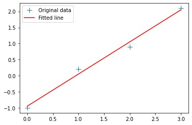
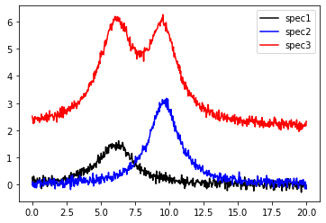
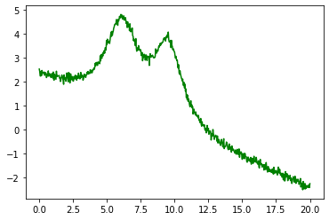
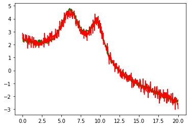

Fitting 01 linear
Linear fitting example
We'll explore linear fits in Python for an artificial problem in spectroscopy: given two spectra from pure samples A and B, find the linear combination that best matches a third spectrum, known to be a mixture of the other two substances.
We first load some standard packages, and linalg.lstsq is used for the linear fit.
import numpy as np
from numpy import exp, pi, sqrt, linspace
import pandas as pd
from matplotlib import pyplot
import matplotlib.pyplot as plt
Standard straight line fit
We first illustrate the typical example of fitting a straight line to a few datapoints.
x = np.array([0, 1, 2, 3])
y = np.array([-1, 0.2, 0.9, 2.1])
A = np.vstack([x, np.ones(len(x))]).T
m, c = np.linalg.lstsq(A, y, rcond=None)[0]
m, c
plt.plot(x, y, '+', label='Original data', markersize=10)
plt.plot(x, m*x + c, 'r', label='Fitted line')
plt.legend()
plt.show()

Artificial dataset
For our spectroscopy example we'll generate dummy data in the form of two noisy peaks with lorentzian lineshape. The third spectrum has a mixture of both peaks, and might correspond to a measurement where the two pure substances A and B were present. We also add a vertical offset that might be an unknown background source.
from lmfit.lineshapes import gaussian, lorentzian
np.random.seed(0)
x = np.linspace(0, 20.0, 601)
spec1 = lorentzian(x, 7, 6.1, 1.5) + np.random.normal(scale=0.1, size=x.size)
spec2 = lorentzian(x, 12, 9.6, 1.25) + np.random.normal(scale=0.1, size=x.size)
spec3 = (lorentzian(x, 13, 9.55, 1.252) + lorentzian(x, 17, 6.12, 1.51)) + 2.1 +np.random.normal(scale=0.1, size=x.size)
plt.plot(x, spec1, 'k', label='spec1')
plt.plot(x, spec2, 'b', label='spec2')
plt.plot(x, spec3, 'r', label='spec3')
plt.legend()
<matplotlib.legend.Legend at 0x7ff078645b50>

Fitting such data is very simple: we just need to form a linear system AB=Y and call linalg.lstsq to solve for the unknown B:
A = np.vstack([spec1, spec2, np.ones(len(x))]).T
B = np.linalg.lstsq(A, spec3, rcond=None)[0]
B
array([2.30046052, 1.08160071, 2.15340051])
The best-fit coefficients can now be used to predict the linear combination of spec1, spec2, and the constant background:
predicted = np.matmul(A,B)
plt.plot(x, spec1, 'grey', label='spec1')
plt.plot(x, spec2, 'c', label='spec2')
plt.plot(x, spec3, 'g', label='spec3')
plt.plot(x, predicted, 'r', label='predicted')
plt.legend()
<matplotlib.legend.Legend at 0x7ff039ccc280>

We can extend this procedure to more linear terms, for example adding a linear background:
spec_unknown = spec3 - 0.23 * x
plt.plot(x, spec_unknown, 'g', label='unknown')
[<matplotlib.lines.Line2D at 0x7ff0186b5b50>]

A = np.vstack([x, spec1, spec2, x, np.ones(len(x))]).T
B = np.linalg.lstsq(A, spec_unknown, rcond=None)[0]
predicted = np.matmul(A,B)
plt.plot(x, spec_unknown, 'g', label='unknown')
plt.plot(x, predicted, 'r', label='predicted')
[<matplotlib.lines.Line2D at 0x7ff039e59310>]

Download this page as a Jupyter notebook or as a standalone Python script.